Fashion MNIST with Prototype Methods
Prototype methods classify objects by finding their proximity to a prototype in the feature space. These methods are flexible, and can be locally interpretable by looking at nearby examples.
We are going to look at examples of prototype methods on Fashion MNIST, a set of 28x28 pixel black and white images of different items of clothing. You could use any kind of features but these images are so simple that we can use the pixels themselves as features.
This notebook trains a classifier that gets about 85% accuracy on this dataset using K nearest neighbours, but on the way explores examining data, average prototypes, predicting accuracy with training data size, and approximate nearest neighbours methods.
This post was generated with a Jupyter notebook. You can also view this notebook on Kaggle or download the Jupyter notebook.
Imports
import numpy as np
import pandas as pd
import matplotlib
import matplotlib.pyplot as pltLoad in the data
The data is stored as CSVs with a label, then each of the 28x28=784 pixels as columns.
df = pd.read_csv('../input/fashionmnist/fashion-mnist_train.csv')
df_test = pd.read_csv('../input/fashionmnist/fashion-mnist_test.csv')df| label | pixel1 | pixel2 | pixel3 | pixel4 | pixel5 | pixel6 | pixel7 | pixel8 | pixel9 | … | pixel775 | pixel776 | pixel777 | pixel778 | pixel779 | pixel780 | pixel781 | pixel782 | pixel783 | pixel784 | |
|---|---|---|---|---|---|---|---|---|---|---|---|---|---|---|---|---|---|---|---|---|---|
| 0 | 2 | 0 | 0 | 0 | 0 | 0 | 0 | 0 | 0 | 0 | … | 0 | 0 | 0 | 0 | 0 | 0 | 0 | 0 | 0 | 0 |
| 1 | 9 | 0 | 0 | 0 | 0 | 0 | 0 | 0 | 0 | 0 | … | 0 | 0 | 0 | 0 | 0 | 0 | 0 | 0 | 0 | 0 |
| 2 | 6 | 0 | 0 | 0 | 0 | 0 | 0 | 0 | 5 | 0 | … | 0 | 0 | 0 | 30 | 43 | 0 | 0 | 0 | 0 | 0 |
| 3 | 0 | 0 | 0 | 0 | 1 | 2 | 0 | 0 | 0 | 0 | … | 3 | 0 | 0 | 0 | 0 | 1 | 0 | 0 | 0 | 0 |
| 4 | 3 | 0 | 0 | 0 | 0 | 0 | 0 | 0 | 0 | 0 | … | 0 | 0 | 0 | 0 | 0 | 0 | 0 | 0 | 0 | 0 |
| … | … | … | … | … | … | … | … | … | … | … | … | … | … | … | … | … | … | … | … | … | … |
| 59995 | 9 | 0 | 0 | 0 | 0 | 0 | 0 | 0 | 0 | 0 | … | 0 | 0 | 0 | 0 | 0 | 0 | 0 | 0 | 0 | 0 |
| 59996 | 1 | 0 | 0 | 0 | 0 | 0 | 0 | 0 | 0 | 0 | … | 73 | 0 | 0 | 0 | 0 | 0 | 0 | 0 | 0 | 0 |
| 59997 | 8 | 0 | 0 | 0 | 0 | 0 | 0 | 0 | 0 | 0 | … | 160 | 162 | 163 | 135 | 94 | 0 | 0 | 0 | 0 | 0 |
| 59998 | 8 | 0 | 0 | 0 | 0 | 0 | 0 | 0 | 0 | 0 | … | 0 | 0 | 0 | 0 | 0 | 0 | 0 | 0 | 0 | 0 |
| 59999 | 7 | 0 | 0 | 0 | 0 | 0 | 0 | 0 | 0 | 0 | … | 0 | 0 | 0 | 0 | 0 | 0 | 0 | 0 | 0 | 0 |
60000 rows × 785 columns
The test set has the same format
df_test| label | pixel1 | pixel2 | pixel3 | pixel4 | pixel5 | pixel6 | pixel7 | pixel8 | pixel9 | … | pixel775 | pixel776 | pixel777 | pixel778 | pixel779 | pixel780 | pixel781 | pixel782 | pixel783 | pixel784 | |
|---|---|---|---|---|---|---|---|---|---|---|---|---|---|---|---|---|---|---|---|---|---|
| 0 | 0 | 0 | 0 | 0 | 0 | 0 | 0 | 0 | 9 | 8 | … | 103 | 87 | 56 | 0 | 0 | 0 | 0 | 0 | 0 | 0 |
| 1 | 1 | 0 | 0 | 0 | 0 | 0 | 0 | 0 | 0 | 0 | … | 34 | 0 | 0 | 0 | 0 | 0 | 0 | 0 | 0 | 0 |
| 2 | 2 | 0 | 0 | 0 | 0 | 0 | 0 | 14 | 53 | 99 | … | 0 | 0 | 0 | 0 | 63 | 53 | 31 | 0 | 0 | 0 |
| 3 | 2 | 0 | 0 | 0 | 0 | 0 | 0 | 0 | 0 | 0 | … | 137 | 126 | 140 | 0 | 133 | 224 | 222 | 56 | 0 | 0 |
| 4 | 3 | 0 | 0 | 0 | 0 | 0 | 0 | 0 | 0 | 0 | … | 0 | 0 | 0 | 0 | 0 | 0 | 0 | 0 | 0 | 0 |
| … | … | … | … | … | … | … | … | … | … | … | … | … | … | … | … | … | … | … | … | … | … |
| 9995 | 0 | 0 | 0 | 0 | 0 | 0 | 0 | 0 | 0 | 0 | … | 32 | 23 | 14 | 20 | 0 | 0 | 1 | 0 | 0 | 0 |
| 9996 | 6 | 0 | 0 | 0 | 0 | 0 | 0 | 0 | 0 | 0 | … | 0 | 0 | 0 | 2 | 52 | 23 | 28 | 0 | 0 | 0 |
| 9997 | 8 | 0 | 0 | 0 | 0 | 0 | 0 | 0 | 0 | 0 | … | 175 | 172 | 172 | 182 | 199 | 222 | 42 | 0 | 1 | 0 |
| 9998 | 8 | 0 | 1 | 3 | 0 | 0 | 0 | 0 | 0 | 0 | … | 0 | 0 | 0 | 0 | 0 | 1 | 0 | 0 | 0 | 0 |
| 9999 | 1 | 0 | 0 | 0 | 0 | 0 | 0 | 0 | 140 | 119 | … | 111 | 95 | 75 | 44 | 1 | 0 | 0 | 0 | 0 | 0 |
10000 rows × 785 columns
Data format
We can read out the label and image of any pixel
idx = 0
label = df.iloc[idx, 0]
image = df.iloc[idx, 1:].to_numpy().reshape(28, 28)
print(label)
ax = plt.imshow(image, cmap="Greys")2
Each image is a series of digits from 0 to 255. Here’s the top left corner.
data = image[:12, :12]
dataarray([[ 0, 0, 0, 0, 0, 0, 0, 0, 0, 0, 0, 0],
[ 0, 0, 0, 0, 0, 0, 0, 0, 0, 0, 0, 0],
[ 0, 0, 0, 0, 0, 0, 0, 0, 0, 0, 0, 0],
[ 0, 0, 0, 0, 4, 0, 0, 0, 0, 0, 62, 61],
[ 0, 0, 0, 0, 0, 0, 0, 88, 201, 228, 225, 255],
[ 0, 0, 0, 0, 0, 47, 252, 234, 238, 224, 215, 215],
[ 0, 0, 1, 0, 0, 214, 222, 210, 213, 224, 225, 217],
[ 1, 0, 0, 0, 128, 237, 207, 224, 224, 207, 216, 214],
[ 0, 2, 0, 0, 237, 222, 215, 207, 210, 212, 213, 206],
[ 0, 4, 0, 85, 228, 210, 218, 200, 211, 208, 203, 215],
[ 0, 0, 0, 217, 224, 215, 206, 205, 204, 217, 230, 222],
[ 1, 0, 21, 225, 212, 212, 203, 211, 225, 193, 139, 136]])Each number maps the corresponding pixel to a color; the larger the number the more black to use.
def show_data(data, figsize=(10,10), ax=None, formatter='{:}'.format):
assert data.ndim == 2
if ax is None:
fig, ax = plt.subplots(figsize=figsize)
im = ax.imshow(data, cmap="Greys")
for i in range(data.shape[0]):
for j in range(data.shape[1]):
text = ax.text(j, i, formatter(data[i, j].item()), ha="center", va="center", color="magenta")
return ax
ax = show_data(data)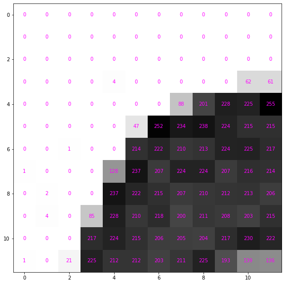
It’s more convenient to use floating point numbers. Renormalise between 0 and 1 and convert it to a pytorch tensor.
image_tensor = image / 255.
data_tensor = image_tensor[:12, :12]
data_tensorarray([[0. , 0. , 0. , 0. , 0. ,
0. , 0. , 0. , 0. , 0. ,
0. , 0. ],
[0. , 0. , 0. , 0. , 0. ,
0. , 0. , 0. , 0. , 0. ,
0. , 0. ],
[0. , 0. , 0. , 0. , 0. ,
0. , 0. , 0. , 0. , 0. ,
0. , 0. ],
[0. , 0. , 0. , 0. , 0.01568627,
0. , 0. , 0. , 0. , 0. ,
0.24313725, 0.23921569],
[0. , 0. , 0. , 0. , 0. ,
0. , 0. , 0.34509804, 0.78823529, 0.89411765,
0.88235294, 1. ],
[0. , 0. , 0. , 0. , 0. ,
0.18431373, 0.98823529, 0.91764706, 0.93333333, 0.87843137,
0.84313725, 0.84313725],
[0. , 0. , 0.00392157, 0. , 0. ,
0.83921569, 0.87058824, 0.82352941, 0.83529412, 0.87843137,
0.88235294, 0.85098039],
[0.00392157, 0. , 0. , 0. , 0.50196078,
0.92941176, 0.81176471, 0.87843137, 0.87843137, 0.81176471,
0.84705882, 0.83921569],
[0. , 0.00784314, 0. , 0. , 0.92941176,
0.87058824, 0.84313725, 0.81176471, 0.82352941, 0.83137255,
0.83529412, 0.80784314],
[0. , 0.01568627, 0. , 0.33333333, 0.89411765,
0.82352941, 0.85490196, 0.78431373, 0.82745098, 0.81568627,
0.79607843, 0.84313725],
[0. , 0. , 0. , 0.85098039, 0.87843137,
0.84313725, 0.80784314, 0.80392157, 0.8 , 0.85098039,
0.90196078, 0.87058824],
[0.00392157, 0. , 0.08235294, 0.88235294, 0.83137255,
0.83137255, 0.79607843, 0.82745098, 0.88235294, 0.75686275,
0.54509804, 0.53333333]])It still looks the same but the numbers are scaled down
ax = show_data(data_tensor, formatter='{:0.3f}'.format)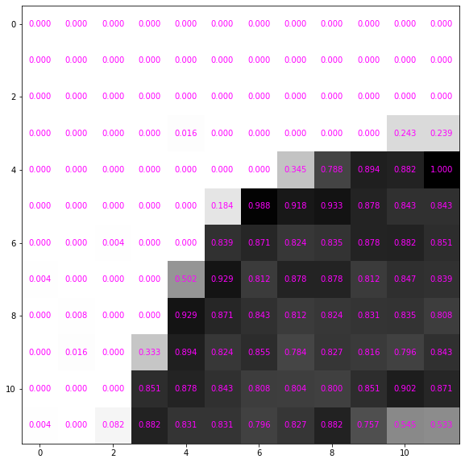
How does imshow know how dark to make the cells?
By default it makex the smallest value whitest and the largest black. From the documentation this can be controlled with vmin and vmax
vmin, vmax: float, optional
When using scalar data and no explicit norm, vmin and vmax define the data range that the colormap covers. By default, the colormap covers the complete value range of the supplied data. It is an error to use vmin/vmax when norm is given. When using RGB(A) data, parameters vmin/vmax are ignored.
So if we double vmax the image appears fainter.
plt.imshow(image_tensor, cmap='Greys', vmin=0., vmax=2.)<matplotlib.image.AxesImage at 0x7f6761405cd0>
Convert data
Let’s put all the data into a large normalised array
images = df.filter(regex='^pixel[0-9]+$', axis=1).to_numpy().reshape((-1, 28, 28)) / 255.
images_test = df_test.filter(regex='^pixel[0-9]+$', axis=1).to_numpy().reshape((-1, 28, 28)) / 255.images.shape(60000, 28, 28)_ = plt.imshow(images[0], cmap='Greys')
So we understand the data let’s use human readable labels. This helps us understand how to classify the data and understand if we’ve made any mistakes. These are copied from the documentation for Fashion MNIST.
labels_txt = """
Label Description
0 T-shirt/top
1 Trouser
2 Pullover
3 Dress
4 Coat
5 Sandal
6 Shirt
7 Sneaker
8 Bag
9 Ankle boot
""".strip()from io import StringIO
df_labels = pd.read_csv(StringIO(labels_txt), sep='\t').set_index('Label')['Description']We can then use this to convert the numeric labels to categories. So we can still access a numeric representation we use Pandas categorical dtype.
cat_type = pd.CategoricalDtype(categories=df_labels)
labels = df['label'].map(df_labels).astype(cat_type)
labels_test = df_test['label'].map(df_labels).astype(cat_type)
labels0 Pullover
1 Ankle boot
2 Shirt
3 T-shirt/top
4 Dress
...
59995 Ankle boot
59996 Trouser
59997 Bag
59998 Bag
59999 Sneaker
Name: label, Length: 60000, dtype: category
Categories (10, object): ['T-shirt/top', 'Trouser', 'Pullover', 'Dress', ..., 'Shirt', 'Sneaker', 'Bag', 'Ankle boot']Labels are same as cateogries
assert (df['label'] == labels.cat.codes).all()Examining data
We have 6000 of each image in labels
labels.value_counts()T-shirt/top 6000
Trouser 6000
Pullover 6000
Dress 6000
Coat 6000
Sandal 6000
Shirt 6000
Sneaker 6000
Bag 6000
Ankle boot 6000
Name: label, dtype: int64The test set contains 1000 of each image
labels_test.value_counts()T-shirt/top 1000
Trouser 1000
Pullover 1000
Dress 1000
Coat 1000
Sandal 1000
Shirt 1000
Sneaker 1000
Bag 1000
Ankle boot 1000
Name: label, dtype: int64Let’s look at some example images from the data with their labels.
def show_images(data, labels=None, nrows=5, ncols=10, figsize=(16,8), indices=None):
fig, axs = plt.subplots(nrows=nrows, ncols=ncols, figsize=figsize)
if indices is None:
indices=np.random.choice(len(data), size=nrows*ncols, replace=False)
for i, ax in enumerate(axs.ravel()):
idx = indices[i]
im = ax.imshow(data[idx], cmap="Greys", norm=matplotlib.colors.Normalize(0., 1.))
if labels is not None:
ax.set_title(labels[idx], pad=0.0)
ax.get_xaxis().set_visible(False)
ax.get_yaxis().set_visible(False)
return fig, axs
fig, ax = show_images(images, labels)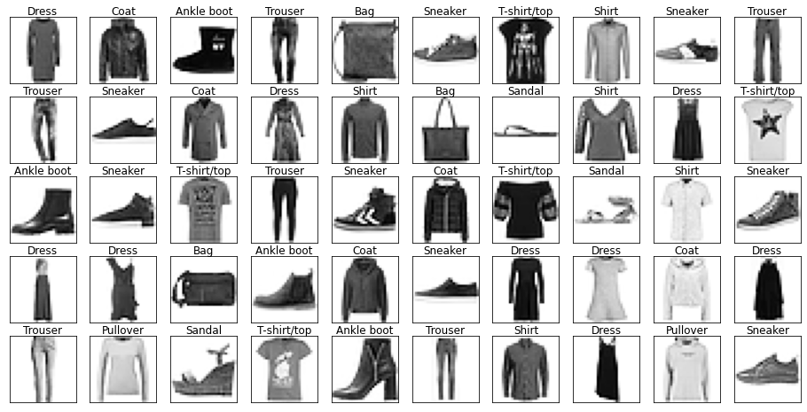
Looking through the categories we can see things like:
- Images are mostly centred, aligned, and cropped
- Trousers are distinctive from their shape
- Shirts are particularly hard to distinguish from tshirt, jacket, pullover and dresshttps://stackoverflow.com/questions/23435782/numpy-selecting-specific-column-index-per-row-by-using-a-list-of-indexes
for label in labels.cat.categories:
mask = labels == label
show_images(images[mask], labels[mask].reset_index(drop=True))
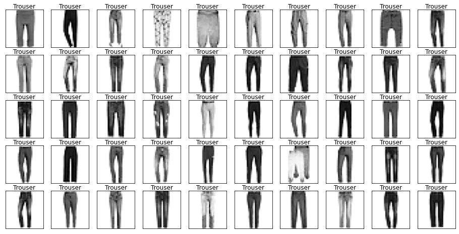

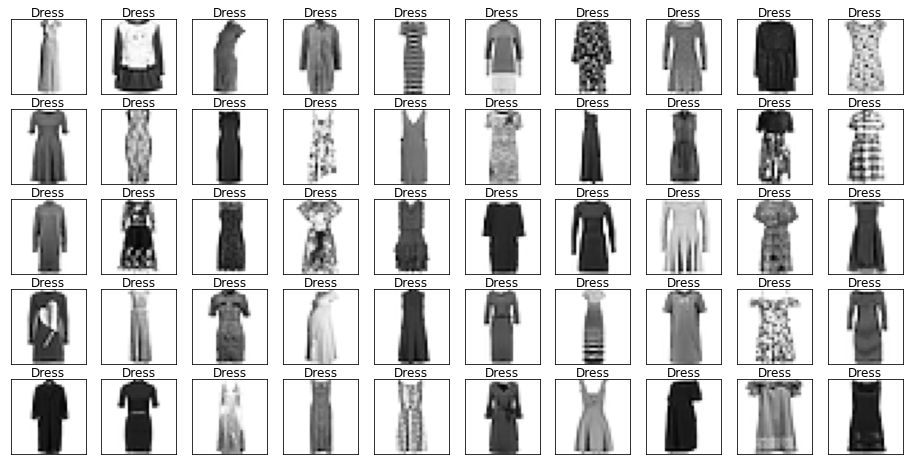

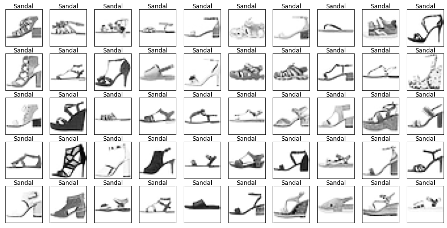

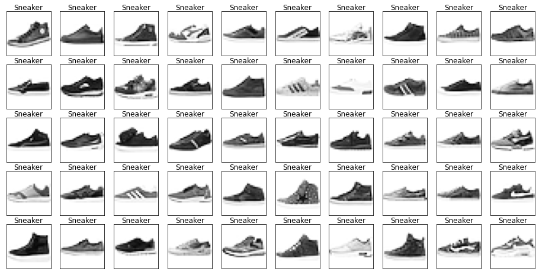
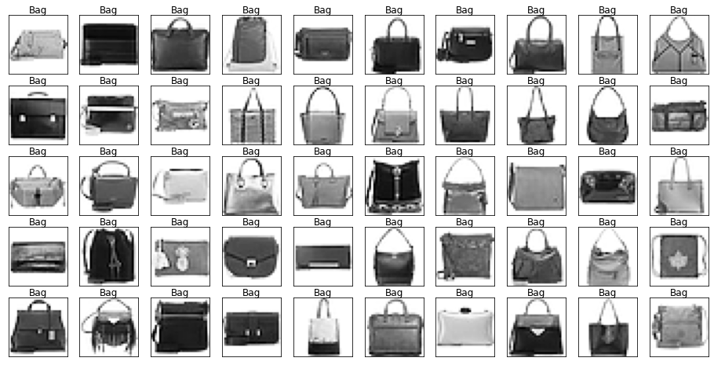

Let’s also have a look at the test data to make sure it’s from the same distribution.
for label in labels_test.cat.categories:
mask = labels_test == label
show_images(images_test[mask], labels_test[mask].reset_index(drop=True), nrows=1, ncols=10, figsize=(16,2))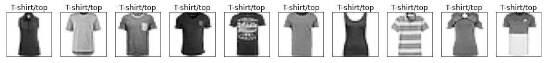
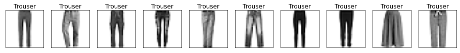
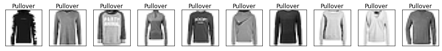
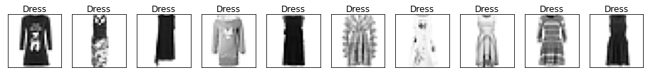
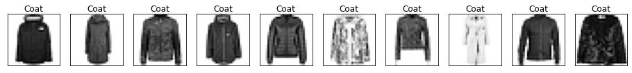
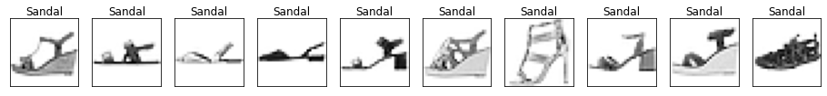
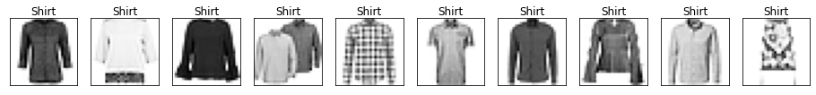
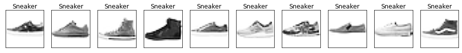

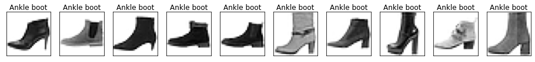
Duplicate detection
Surprisingly often many duplicates can end up in the training data, or worse leak between the training and test data. It’s always worth doing a check for duplicates.
There a small amount of duplicated in the training set. We could drop them but they’re not too concerning here.
n_train_dup = df.filter(regex='pixel').duplicated().sum()
n_train_dup43There’s one duplicate in the test set
n_test_dup = df_test.filter(regex='pixel').duplicated().sum()
n_test_dup1We also see there are 10 images in the test set from the training set. This amount of leakage is quite small so we won’t worry about it.
pd.concat([df, df_test], axis=0, ignore_index=True).filter(regex='pixel').duplicated().sum() - (n_train_dup + n_test_dup)10If we were being more careful we would also look into near duplicates; there may be images that are practically identical but have slightly different pixel representations.
Creating validation set
It’s essential to have a separate validation set to check any of our models on, and tune any hyperparameters. We don’t want to overfit to the test set, and will save it for our best model.
Let’s make a random 20% sample
valid_pct = 0.2
valid_idx = np.random.choice(len(df), size=int(len(df) * valid_pct), replace=False)
df['valid'] = False
df.loc[valid_idx, 'valid']= Truelabels_train, labels_valid = labels[~df['valid']].reset_index(drop=True), labels[df['valid']].reset_index(drop=True)
images_train, images_valid = images[~df['valid']], images[df['valid']]Let’s check the categories are split evently between training and validation sets.
labels_train.value_counts()Pullover 4876
Ankle boot 4838
Sneaker 4817
Bag 4804
Trouser 4800
Sandal 4790
Shirt 4785
Coat 4773
T-shirt/top 4765
Dress 4752
Name: label, dtype: int64labels_valid.value_counts()Dress 1248
T-shirt/top 1235
Coat 1227
Shirt 1215
Sandal 1210
Trouser 1200
Bag 1196
Sneaker 1183
Ankle boot 1162
Pullover 1124
Name: label, dtype: int64And the data is of the right shape.
images_train.shape, images_valid.shape((48000, 28, 28), (12000, 28, 28))Average Prototype
A simple prototype is to take the pixel average of each category.
prototypes = []
cats = labels_train.cat.categories
for label in cats:
mask = labels_train == label
prototypes.append(images_train[mask].mean(axis=(0)))np.stack(prototypes).shape(10, 28, 28).We can view our “average” prototypes.
Note in particular Sandal is very blurry and hard to distinguish from sneaker.
_ = show_images(prototypes, labels=cats, nrows=1, ncols=10, figsize=(16,2), indices=range(10))
We can calculate the distance of the images to these prototypes and classify using the closest prototype.
def mse(a, b):
return ((a-b) ** 2).mean(axis=(-1,-2))mse(images_valid[0], prototypes[0])0.08952501294287363We can then calculate the distance to each prototype across the dataset.
dists = np.stack([mse(images_valid, ptype) for ptype in prototypes])
dists[0,0], dists.shape(0.08952501294287363, (10, 12000))We then predict the class as the closest prototype.
def predict_prototype(images):
dists = np.stack([mse(images, ptype) for ptype in prototypes])
pred_idxs = dists.argmin(axis=0)
# https://stackoverflow.com/questions/23435782/numpy-selecting-specific-column-index-per-row-by-using-a-list-of-indexes
return cats[pred_idxs], dists[pred_idxs, np.arange(dists.shape[1])]We get around 68% on the validation set. Much better than random ~10%, but nowhere near the best models around 90%.
preds_valid, dists_valid = predict_prototype(images_valid)
(preds_valid == labels_valid).mean()0.6828333333333333We get a similar score on the trianing set; there are very few parameters in this model (7840 for the pixels of the prototypes), and it won’t overfit.
preds, dists = predict_prototype(images_train)
(preds == labels_train).mean()0.6847291666666667Confusion matrix
To understand how to improve the model it’s useful to use the Confusion Matrix, showing which classes are being mixed up by the model. We could use sklear ConfusionMatrixDisplay but it’s straightforward to create ourselves.
As expected trouser is the easiest and shirt is the hardest.
Interestingly sandal is the most predicted category and different kinds of items are predicted for it.
from collections import Counter
def plot_confusion_matrix(y_true, y_pred, figsize=(10,10), labels=cats):
counts = Counter(zip(y_true, y_pred))
confusion_matrix = np.array([[counts[true_cat, pred_cat] for pred_cat in cats] for true_cat in cats])
maxval = confusion_matrix.max()
fig, ax = plt.subplots(figsize=figsize)
ax.set_xticks(np.arange(len(labels)), labels=[f'{label}\n({total})' for label, total in zip(labels, confusion_matrix.sum(axis=0))])
ax.set_yticks(np.arange(len(labels)), labels=[f'{label}\n({total})' for label, total in zip(labels, confusion_matrix.sum(axis=1))])
ax.set_xlabel('Predicted')
ax.set_ylabel('Actual')
im = ax.imshow(confusion_matrix, cmap="magma")
for i in range(len(cats)):
for j in range(len(cats)):
datum = confusion_matrix[i, j]
text = ax.text(j, i, datum, ha="center", va="center", color='black' if datum > maxval/2 else 'white')
return ax_ = plot_confusion_matrix(labels_train, preds)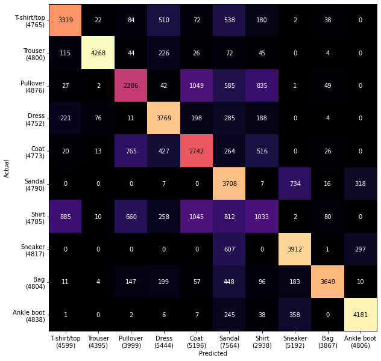
The validation set shows a very similar pattern
_ = plot_confusion_matrix(labels_valid, preds_valid)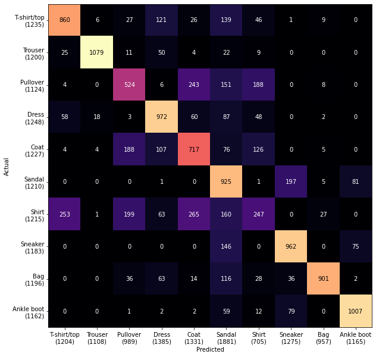
Error analysis
Remember these are our prototypes
_ = show_images(prototypes, labels=cats, nrows=1, ncols=10, figsize=(16,2), indices=range(10))
Let’s look at the predictions that are furthest from the prototypes.
Becuase the prototypes are an average grey these are the furthest away.
def pred_text(labels, dists, preds):
return [f'{label}\n{pred}: {dist:0.3f}' for label, dist, pred in zip(labels, dists, preds)]
fig, axs = show_images(images_train, pred_text(labels_train, dists, preds),
indices=np.argsort(-dists),
figsize=(20,12))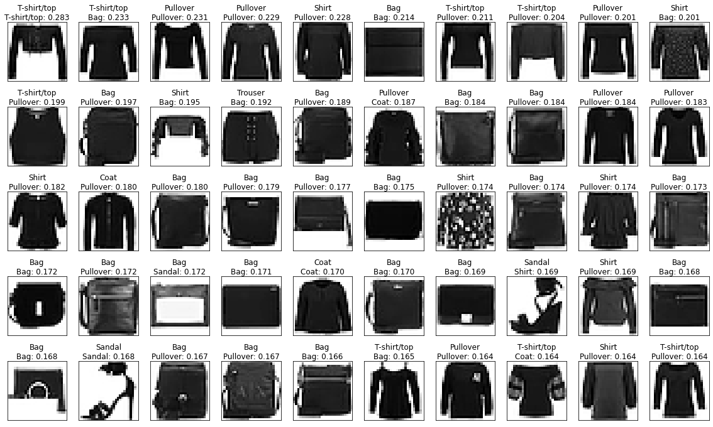
Another angle to look at is the ones that are very close to a wrong category.
- It’s often mistaking sneakers for sandals
- Many of the shirts/t-shirts/coat/pullover examples are quite hard!
indices_confident_wrong = np.argsort(np.where(labels_train != preds, dists, np.inf))
fig, axs = show_images(images_train, pred_text(labels_train, dists, preds), indices=indices_confident_wrong, figsize=(20,12))
Multiple prototypes - K Means Clustering
Sandals didn’t do well because there are multiple kinds of sandals; we need more than 1 prototype. We could find different prototypes with K-Means Clustering.
k = 3We’ll initialize on random images
images_sandal = images_train[labels_train == 'Sandal']points = images_sandal[np.random.choice(len(images_sandal), k)]We can look at our initial examples
show_images(points, nrows=1, ncols=k, indices=range(k))(<Figure size 1152x576 with 3 Axes>,
array([<AxesSubplot:>, <AxesSubplot:>, <AxesSubplot:>], dtype=object))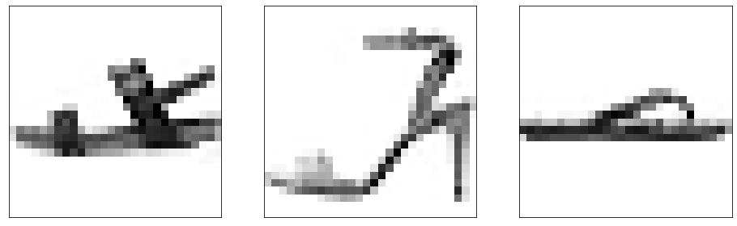
The K means algorithm updates the prototypes by replacing them with the centre of their nearest points
dists = np.stack([mse(images_sandal, ptype) for ptype in points])
pred_idx = dists.argmin(axis=0)Mean distance to closest point
dists[pred_idx, np.arange(len(pred_idx))].mean()0.07609486260835334new_points = [np.zeros_like(p) for p in points]
counts = Counter(pred_idx)
for p, img in zip(pred_idx, images_sandal):
new_points[p] += img / counts[p]The points have moved somewhat
((points - new_points) ** 2).max()0.5780382666820493The points are closer to the centres
dists = np.stack([mse(images_sandal, ptype) for ptype in new_points])
pred_idx = dists.argmin(axis=0)
dists[pred_idx, np.arange(len(pred_idx))].mean()0.041198112905058926The points look less distinct.
show_images(new_points, nrows=1, ncols=k, indices=range(k))(<Figure size 1152x576 with 3 Axes>,
array([<AxesSubplot:>, <AxesSubplot:>, <AxesSubplot:>], dtype=object))def kmeans_update(points, images):
dists = np.stack([mse(images_sandal, ptype) for ptype in points])
pred_idx = dists.argmin(axis=0)
avg_closest_dist = dists[pred_idx, np.arange(len(pred_idx))].mean()
new_points = [np.zeros_like(p) for p in points]
counts = Counter(pred_idx)
for p, img in zip(pred_idx, images_sandal):
new_points[p] += img / counts[p]
return np.stack(new_points), avg_closest_distnew_points, dist = kmeans_update(points, images_sandal)
dist, ((new_points - points)**2).mean()(0.07609486260835334, 0.03428306668446661)for _ in range(20):
new_points, dist = kmeans_update(points, images_sandal)
print(dist, ((new_points - points)**2).mean())
points = new_points0.07609486260835334 0.03428306668446661
0.041198112905058926 0.00023726827891309429
0.04092454159135468 1.3108373812449763e-05
0.04090896432848311 1.7028060653073558e-06
0.04090644168969744 1.019623124431402e-06
0.04090493622002984 7.511999849344715e-07
0.04090387345615791 2.3532142621230394e-07
0.04090353329883353 1.159359378424659e-07
0.04090339045888112 5.988210697082061e-08
0.040903300380743315 5.099355708565635e-08
0.0409032466943707 9.259498571269447e-09
0.04090323766449002 0.0
0.04090323766449002 0.0
0.04090323766449002 0.0
0.04090323766449002 0.0
0.04090323766449002 0.0
0.04090323766449002 0.0
0.04090323766449002 0.0
0.04090323766449002 0.0
0.04090323766449002 0.0We get a few different kinds of sandal protoype. But they still don’t look very good.
show_images(points, nrows=1, ncols=k, indices=range(k))(<Figure size 1152x576 with 3 Axes>,
array([<AxesSubplot:>, <AxesSubplot:>, <AxesSubplot:>], dtype=object))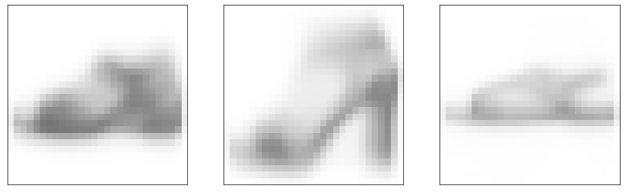
Lets add these to the prototypes
sandal_idx = list(cats).index('Sandal')
new_prototype_cats = np.array(list(cats)[:sandal_idx] + list(cats)[sandal_idx+1:] + k*['Sandal'])
new_prototypes = prototypes[:sandal_idx] + prototypes[sandal_idx+1:] + list(points)_ = show_images(new_prototypes, new_prototype_cats, nrows=1, ncols=len(new_prototypes), indices=range(len(new_prototypes)))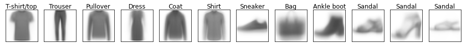
def predict_prototype(images, prototypes, cats):
dists = np.stack([mse(images, ptype) for ptype in prototypes])
pred_idxs = dists.argmin(axis=0)
return cats[pred_idxs], dists[pred_idxs, np.arange(dists.shape[1])]preds, dists = predict_prototype(images_valid, new_prototypes, new_prototype_cats)It doesn’t change the accuracy much
(preds == labels_valid).mean()0.6850833333333334There are potential ways we could produce better prototypes, like Learning Vector Quantization that tries to avoid images close to the boundaries. But another approach is to use the images themselves as prototypes using K-nearest neighbours.
K-nearest neighbours
This approach finds the closest images to the training data and assigns the most common category. Here’s a method to do that.
Let’s tart with a validation image
print(labels_valid[0])
plt.imshow(images_valid[0], cmap='Greys')Shirt
<matplotlib.image.AxesImage at 0x7f67307a7350>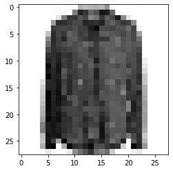
We then compute the distance to each training image
dists = ((images_valid[0] - images_train) ** 2).mean(axis=(-1,-2))
distsarray([0.13868883, 0.24805587, 0.13288863, ..., 0.21719462, 0.11814736,
0.16748133])Then we find the closest k points.
We use argpartition for a fast sort of the first k entries
k= 3
top_idx = np.argpartition(dists, k)[:k]We can check these are the the closest
dists[top_idx]array([0.01323082, 0.01435262, 0.01550489])for idx in top_idx:
assert (dists[idx] >= dists).sum() <= kWe can inspect them and see that they are pixelwise similar
_ = show_images(images_train, labels_train, nrows=1, ncols=k, indices=top_idx)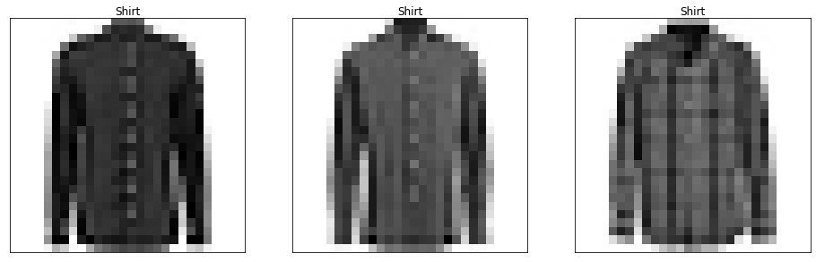
We can then get the corresponding labels and their counts
pred_labels = labels_train.loc[top_idx]
pred_labels28647 Shirt
42701 Shirt
28258 Shirt
Name: label, dtype: category
Categories (10, object): ['T-shirt/top', 'Trouser', 'Pullover', 'Dress', ..., 'Shirt', 'Sneaker', 'Bag', 'Ankle boot']pred_counts = Counter(pred_labels)
pred_countsCounter({'Shirt': 3})We can get the most common label and its count.
pred_label, label_count = pred_counts.most_common(n=1)[0]
pred_label, label_count('Shirt', 3)Let’s wrap all this up in a class
class KNN():
def __init__(self, images, labels, k=1):
self.images = images
self.labels = labels
self.k = k
def __call__(self, image, k=None):
k = k or self.k
dists = ((image - self.images) ** 2).mean(axis=(-1,-2))
top_idx = np.argpartition(dists, k) [:k]
pred_labels = self.labels.loc[top_idx]
pred_counts = Counter(pred_labels)
pred_label, label_count = pred_counts.most_common(n=1)[0]
return pred_labelknn = KNN(images_train, labels_train)knn(images_valid[0]), labels_valid[0]('Shirt', 'Shirt')We can then iterate over the validation images; unfortunately it’s quite slow!
%time preds = [knn(i) for i in images_valid[:100]]CPU times: user 12.4 s, sys: 7.16 s, total: 19.5 s
Wall time: 19.5 slen(images_train)48000We can speed it up by only using a random sample of the training images.
sample = np.random.choice(len(images_train), 1_000, replace=False)
knn_small = KNN(images_train[sample], labels_train.loc[sample].reset_index(drop=True))%time preds = [knn_small(i) for i in images_valid]CPU times: user 28.3 s, sys: 65.2 ms, total: 28.4 s
Wall time: 28.4 sThis does considerably better than the other methods
np.mean(preds == labels_valid)0.7454166666666666Increasing k slighly changes the result
%time preds = [knn_small(i, k=5) for i in images_valid]CPU times: user 28 s, sys: 97.7 ms, total: 28.1 s
Wall time: 28.1 snp.mean(preds == labels_valid)0.7546666666666667How does it scale with the number of training images used?
Let’s make a function to evaluate a sample on the validation set and return the result.
def eval_knn_sample(n, k):
sample = np.random.choice(len(images_train), n, replace=False)
knn = KNN(images_train[sample], labels_train.loc[sample].reset_index(drop=True), k=k)
preds = [knn(i) for i in images_valid]
return np.mean(preds == labels_valid)Let’s also track how long it takes for each size.
import time
def with_time(f, *args, **kwargs):
start_time = time.monotonic_ns()
result = f(*args, **kwargs)
elapsed_time = time.monotonic_ns() - start_time
return result, elapsed_time / 1e9Now we’ll try a few, small, increasing sizes capture the accuracy and speed (I’ve just set k=1 here to keep it faster; you could use different values of k).
%%time
knn_evals = []
for k in [1]:
for n in [200, 400, 800, 1600]:
acc, elapsed_time = with_time(eval_knn_sample, n, k)
knn_evals.append(dict(k=k, n=n, acc=acc, time=elapsed_time))CPU times: user 1min 31s, sys: 210 ms, total: 1min 32s
Wall time: 1min 32sWe can then plot how the error rate scales with size.
df_knn_evals = pd.DataFrame(knn_evals).assign(err=lambda _: 1 - _.acc)
df_knn_evals.assign(k=lambda _: pd.Categorical(_.k)).plot.scatter(x='n', y='err', c='k', cmap='Dark2')<AxesSubplot:xlabel='n', ylabel='err'>
On log-log axes it’s a straight line
df_knn_evals.assign(k=lambda _: pd.Categorical(_.k)).plot.scatter(x='n', y='err', c='k', cmap='Dark2', logx=True, logy=True)<AxesSubplot:xlabel='n', ylabel='err'>
Let’s fit a linear model in log-log space to get an idea of how this will scale. We have to be careful about extrapolating and any estimate of accuracy we make is likely to be optimistic.
log_err_1 = np.log2(df_knn_evals.query('k==1')['err'].to_numpy())
log_err_1array([-1.68810943, -1.7954419 , -1.94944026, -2.14294794])Get around 0.15 increase in log2 accuracy for each doubling of data.
This is the slope of our line
log_err_1[:-1] - log_err_1[1:]array([0.10733247, 0.15399836, 0.19350768])slope = np.mean(log_err_1[:-1] - log_err_1[1:])
slope0.15161283577893947We then find the intercept to match the average actual error.
c = df_knn_evals.assign(resid = lambda _: np.log2(_.err) + slope*np.log2(_.n)).resid.mean()
c-0.5076589129554365The predictions can be wrapped in a function
def pred_error(n):
log2_pred = c - slope * np.log2(n)
return 2**log2_predAnd the fit looks pretty good
x = np.arange(df_knn_evals.n.min(), df_knn_evals.n.max(), step=50)
plt.plot(x, pred_error(x))
plt.scatter(df_knn_evals.n, df_knn_evals.err)<matplotlib.collections.PathCollection at 0x7f672fbb6650>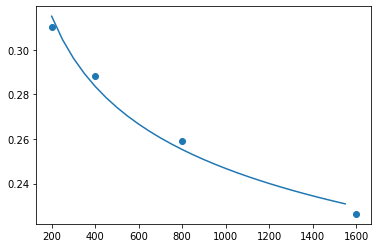
We have to be careful when extrapolating, but error could get down to about 14%. This is likely to be slightly optimistic so maybe 15-16% is a better guess.
pred_error(len(images_train))0.13722814118447552On the other hand time is linear
df_knn_evals.plot('n', 'time')<AxesSubplot:xlabel='n'>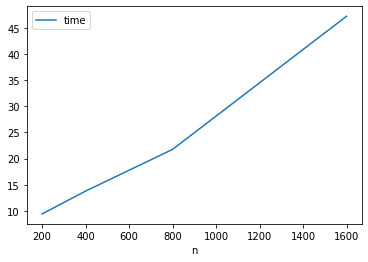
It would take a while to run over all the samples.
import datetime
len(images_train) / df_knn_evals.n.max() * df_knn_evals.time.max() / 60 # seconds/minute23.600099697Making it faster with Approximate Nearest Neighbours
Instead of brute force searching for the closest point we can use Approximate Nearest Neighbours to speed it up. There are many good libraries including faiss and hnswlib, but we’ll use annoy.
It uses Locality Sensitive Hashing; see Chapter 3 of Mining of Massive Datasets, by Leskovec, Rajaraman and Ullman for a good overview.
from annoy import AnnoyIndexFirst we initialise an index and add all the vectors
%%time
t = AnnoyIndex(28*28, 'euclidean')
for i, v in enumerate(images_train):
t.add_item(i, v.flatten())CPU times: user 7.88 s, sys: 229 ms, total: 8.11 s
Wall time: 7.9 sThen we build the index, specifying the number of trees. 10 seems to work fine in this case.
t.build(10)TrueWe then adapt our search to use the nearest neighbour from the index rather than brute forcing the search.
def ann_pred(v, k=1, search_k=-1):
n = t.get_nns_by_vector(v.flatten(), k, search_k=search_k, include_distances=False)
pred_labels = labels_train.loc[n]
pred_counts = Counter(pred_labels)
pred_label = pred_counts.most_common(n=1)[0][0]
return pred_labelWe can then get results in seconds rather than minutes.
%time preds = [ann_pred(i, k=5) for i in images_valid]CPU times: user 13.7 s, sys: 7.48 ms, total: 13.7 s
Wall time: 13.7 sAnd we get around 85% accuracy, matching the ~15% error rate we expected from an exact solution
np.mean(preds == labels_valid)0.84875We’re getting much more even predictions and more understandable confusion between:
- top/pullover/coat/shirt
- ankle boot/sneaker/sandal
The worst performing is shirt, which was the hardest for me to identify
_ = plot_confusion_matrix(labels_valid, preds)
Let’s grab an example where we the label was Shirt and we predicted T-shirt/top.
It looks like a t-shirt to me
img = images_valid[(np.array(preds) == 'T-shirt/top') & (labels_valid == 'Shirt')][0]
plt.imshow(img, cmap='Greys')<matplotlib.image.AxesImage at 0x7f6730683a50>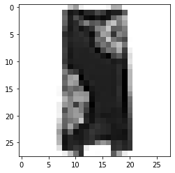
And we can see the nearby items that led to the prediction.
k = 5
n = t.get_nns_by_vector(img.flatten(), k)
_ = show_images(images_train, labels_train, nrows=1, ncols=k, indices=n)
Another example is a pair of trousers the model guessed was a dress
img = images_valid[(np.array(preds) == 'Dress') & (labels_valid == 'Trouser')][0]
plt.imshow(img, cmap='Greys')<matplotlib.image.AxesImage at 0x7f67302bb290>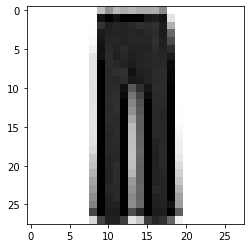
n = t.get_nns_by_vector(img.flatten(), k)
_ = show_images(images_train, labels_train, nrows=1, ncols=k, indices=n)
There’s no obvious way to improve the model, so let’s do a hyperparameter search for the best k
%%time
accs = {}
for k in [1,5,10,20,100]:
preds = [ann_pred(i, k=k) for i in images_valid]
accs[k] = np.mean(preds == labels_valid)CPU times: user 1min 8s, sys: 10 ms, total: 1min 8s
Wall time: 1min 8sIt looks like 5 is marginally better
pd.Series(accs).sort_values(ascending=False).to_frame()| 0 | |
|---|---|
| 5 | 0.848750 |
| 10 | 0.841750 |
| 1 | 0.841083 |
| 20 | 0.832833 |
| 100 | 0.806250 |
Now we have our best prototype model lets evaluate on the test set, and we get an accuracy of around 85%. Comparing with the benchmarks using sklearn this is about what they get with KNN methods (and it looks like using Manhattan Distance, aka l^p with p=1, would do slightly better).
Given the very best methods get around 90% (or up to 94% with convolutional neural networks) this is quite good!
%%time
preds = [ann_pred(i, k=5) for i in images_test]
np.mean(preds == labels_test)CPU times: user 10.5 s, sys: 502 µs, total: 10.5 s
Wall time: 10.5 s
0.849Of course we could have done this all in a few lines of sklearn. But by looking through understanding how it works and looking at the images we get a much better idea of why we get these results, and maybe ideas on how to improve it. (I expect the sklearn method below does better by standardizing the features before computing distances; that would be an interesting exercise.)
%%time
from sklearn.neighbors import KNeighborsClassifier
from sklearn.metrics import accuracy_score
knn = KNeighborsClassifier()
knn.fit(df.filter(like='pixel', axis=1), df['label'])
preds = knn.predict(df_test.filter(like='pixel', axis=1))
accuracy_score(df_test['label'], preds)CPU times: user 1min 9s, sys: 8.63 s, total: 1min 18s
Wall time: 30.9 s
0.8589Prototype methods are remarkably simple, quick to train and flexible. Because the images here are so simple we get good results on the pixels directly. For more complex datatypes we could use derived features; in particular the activations from a pretrained neural network such as Resnet, BERT, or CLIP can work well.
For more on prototype methods read Chapter 13 of The Elements of Statistical Learning.